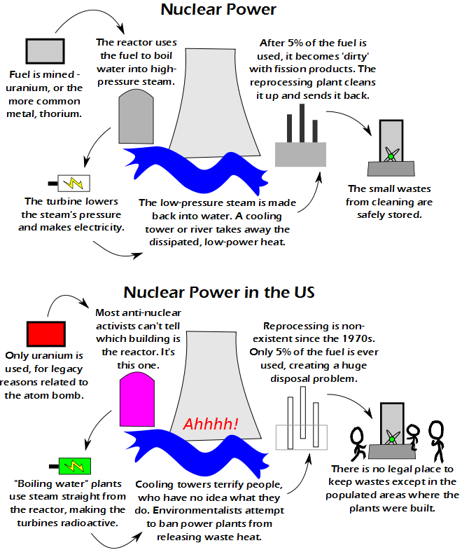

Comic JK 765
When I Feel Like It
⇤
<
?
>
⇥

⇤
<
?
>
⇥
Forum
.
RSS
.
Digg
.
Facebook
.
Reddit
.
Twitter
.
Stumbleupon
Enter your thoughts on number 765 here. Please, no spamming, trolling, phreaking, or building nuclear power plants in my backyard. Your mother's nuclear reactor uses only 1% of its fuel and then she gives the rest to dorky college boys. US reactor buildings are pink? Yeah you know what? Greenpeace should leave our 1 single clean power plant alone, and just do something about the bad ones in the US. I had no idea it was so bad over there. Most US Power plants are not "Boiling water" plants. There are many BWRs in Europe and Asia as well, not the biggest concern. Even BWRs dont use steam straight from the reactor in the turbines. the primary coolant (from the reactor) makes steam in the secondary coolant, which is separate, to drive the turbines -About 1/3 of the US plants are BWRs. Ahhhhhhh, the cooling towers are going to get me!!!!! Also, only India uses the Thorium type reactors. Reprocessing is an American issue, though. To be fair, I'm pretty sure we still need to use uranium for enrichment purposes. Uranium->Plutonium->Warheads->Decay into something useful for industry I think. Nope, all power plants use Uranium (3-8% U235 enriched), 'natural' is ~99% U238. Thorium can be bred in to U-333 which is also fissile. Plutonium is actually a byproduct of the power plant. >but we need the plutonium to power our DeLorean time machines! >>There was only one DeLorean, it was eventually converted to use a fusion reactor with any garbage as the fuel material, and then was destroyed by a train. Learn your history! >>>in a universe with time machines, is "history" a valid subject ? 1.21 JIGAWATTS???!!!! 1.21 Jiggawatts? >>>>by law, US plants can't use fuel with U-235 enrichment higher than 5% YAY Nukes for Everyone! When can I buy one at Wal-Mart?? > I want one too, plus nuclear winter should get rid of global warming . . . I say we should allow private ownership of nukes, as long as they are all of the davy-crockett variety where the user goes up in the big ball of flame as well as the target. I just checked up on this site in order to avoid a chemistry problem involving uranium, and this is what I find... Clearly, we just need to perfect fusion reactors and then we can start mining helium 3 from You're Anus or something. > But fusion power is fifty years away. >>That's exactly why we need to hurry. The amount of time it takes to develop a new technology is reversely proportional to the effort put into it. Remember how long the Manhatten project took us (humanity)? >>> The Joke is that Fusion power is commonly accepted to always be "50 years away". Which, frankly, I'm not OK with. The sooner we get a physicist into the secretary of energy position, the better. It is kind of annoying that nobody (especially Environmentalists and other anti-nuclear activists) seem to know how nuclear power works, and also seem to not know how to use a library, Wikipedia or a search engine in order to find out. >when you are loud and angry, facts just get it the way! >>Actually, one of the biggest concerns e.g. in Germany is if to "safely" store the "small" wastes from cleaning is actually possible... >>>the moon is a safe place for storage </snarky> >>>>it definitely is not safe - I saw a series of documentaries on the subject... >>>>>Were those Greenpeace documentaries on the evils of human impact on the Lunar environment? >>>>>>There are people concerned over the lunar environment? Jeez. We haven't even gotten Earth's environment taken care of. Priorities, people. This could easily be solved by magic. Someone call Twilight. >Yes! Twilight can lecture the activists! I hope this isn't trying to compare the rest of the world to the US. People worldwide are irrationally afraid of it. Look at Germany. You can find BWRs everywhere, and no-one has a good plan for waste yet. way to go with the misinformed fear mongering. Douches. > It's called "democracy". You can't win if the populace is generally stupid. I am happy to stumble upon something about nuclear energy that is bringing these problems up. This type of energy has had a stigma attached to it for to long. American reactors are basically patterned on the Westinghouse reactor used on the Nautilus from 1950's! Stressing high pwr and compact dimensions.